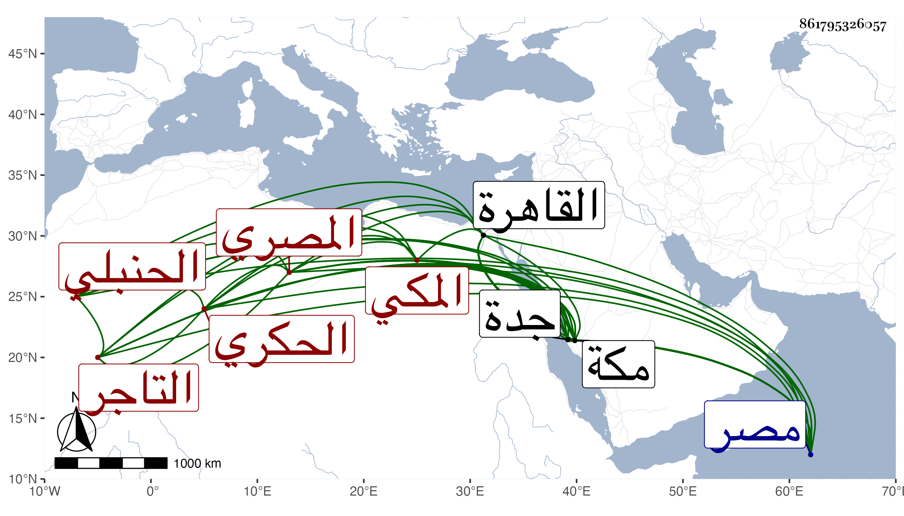

0902Sakhawi.DawLamic.ITO20230111-ara1.EIS1600.861795326057
Biography ID: 861795326057
409
محمد بن محمد بن علي بن محمد الشمس المصري ثم المكي التاجر سبط القاضي نور الدين علي بن خليل الحكري الحنبلي ويعرف بزيت حار . ولد في يوم الاثنين ثامن المحرم سنة أربع وعشرين بمصر وتحول منها مع أبيه وهو ابن نحو خمس سنين إلى مكة فأقام بها حتى رجع إلى القاهرة مع خاله البدر محمد الحكري واستمر معه وحفظ القرآن بل وأقرأه في الخرقى وتنزل في البرقوقية فلما مات خاله وذلك في سنة سبع وثلاثين عاد إلى مكة مع أبيه فقطنها وتكسب بالقبانة ثم ارتقى فيها بفرضه جدة لم يخرج منها لغير جدة والزيارة إلا في سنة خمس وتسعين مطلوبا وأودع حبس أولى الجرائم حتى بذل ثم أطلق وعاد إلى بلده ولم يفته الحج في طول المدة إلا فيها كما أخبرني وقال أيضا أنه جود على ابن عياش وعلى الديروطي ، وارتقى في التجارة وصار له بمكة وجدة الدور وبعضها من إنشائه وهو ممن يكثر الطواف والتلاوة ويظهر الفاقة وربما كان قبل المصادرة يعطي اليسير لبعض الفقراء ثم بطل وكذا كان يخلط .
